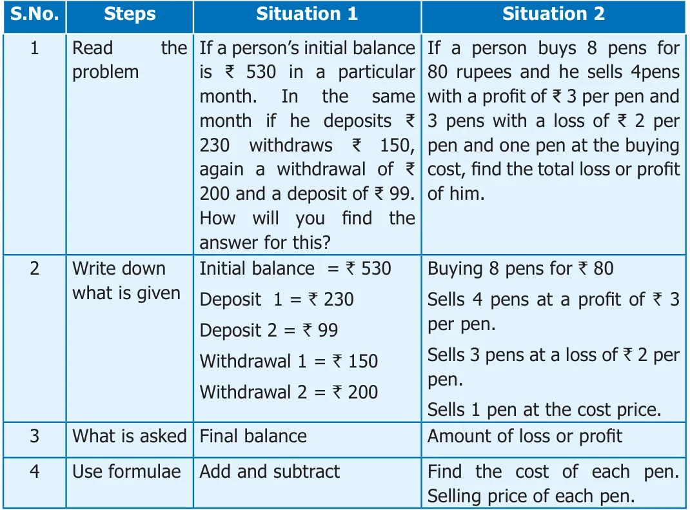
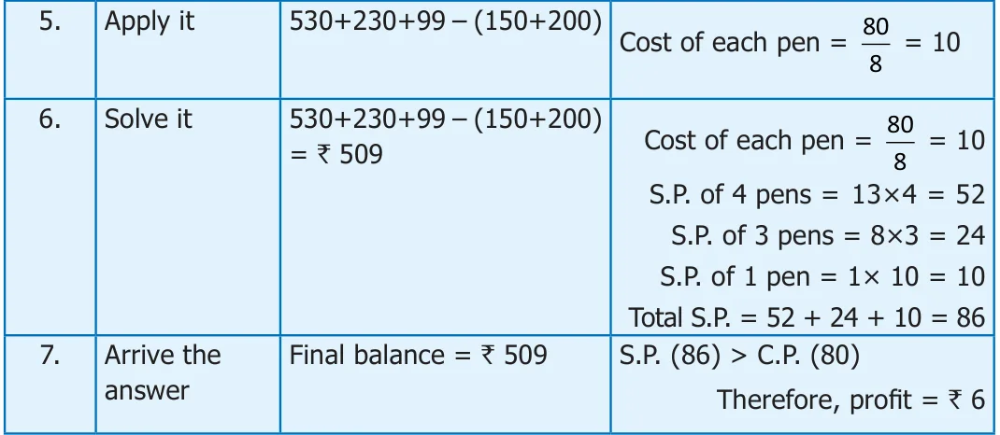

We have learned how to add, subtract, multiply and divide integers. This section will review the rules learned for operations with integers. All the mathematical problems are life oriented problems.
SituationSituation 1
If a person’s initial balance is ₹ 530 in a particular month. In the same month if he deposits ₹ 230 withdraws ₹ 150, again a withdrawal of ₹ 200 and a deposit of ₹ 99. How will you find the answer for this?
SituationSituation 2
If a person buys 8 pens for 80 rupees and he sells 4pens with a profit of ₹ 3 per pen and 3 pens with a loss of ₹ 2 per pen and one pen at the buying cost, find the total loss or profit of him. Do you have any idea to approach this problem? To solve all the statement problem, the following steps may be followed.
- 1.Read the problem thoroughly.
- 2.Write down what is given.
- 3.Find out what they are asking.
- 4.Use the required formulae or easy way to attain the answer.
- 5.Apply it.
- 6.Solve it.
- 7.Arrive the answer.
- 8.Check your answer.
Let us approach the above two situations as given below:


Example 1.28
Ferozkhan collects `1150 at the rate of ` 25 per head from his classmates on account of the 'Flag Day' in his school and returns ` 8 to each one of them, as instructed by his teacher. Find the amount handed over by him to his teacher.
Solution
Ferozkhan collects `1150 at the rate of ` 25 per head from his classmates on account of the 'Flag Day'
Total amount collected = `1150 46 Amount per head = ` 25 25 1150 Number of students \(= 1150 \div 25 = 46 100\) Amount returned to each student is ` 8 150 Amount returned to 46 students \(= 46 \times 8 =\) ` 368 150 Amount handed over to the class teacher = ` 1150 0
Amount handed over to the class teacher = ` 782
Example 1.29
Each day, the workers drill down 22 feet further until they hit a pool of water. If the water is at 110 feet, on which day will they hit the pool of water?
Solution
Depth drilled in one day \(= - 22\) feet 5
Depth of water \(= - 110\) feet 22 110 Number of days required \(= - 110 \div - 22 = 5 110\) Hence the workers wil reach resource in 5 days. 0
Example 1.30
How many years are between 323 BC(BCE) and 1687 AD(CE)?
Solution
Years in AD(CE) are taken as positive integers and BC(BCE) as negative integers. Therefore, the difference is
\(= 1687 -\) ( \(- 323) = 1687 + 323 = 2010\) years
- 1.One night in Kashmir, the temperature is \(- 5 C\). Next day the temperature is 9 C.
What is the increase in temperature?
- 2.An atom can contain protons which have a positive charge (+) and electrons which
have a negative charge ( - ) . When an electron and a proton pair up, they become neutral (0) and cancel the charge out. Now, Determine the net charge:
- (i)5 electrons and 3 protons \(\to - +5 3 = - 2\) that is 2 electrons
- (ii)6 Protons and 6 electrons \(\to\)
- (iii)9 protons and 12 electrons \(\to\)
- (iv)4 protons and 8 electrons \(\to\)
- (v)7 protons and 6 electrons \(\to\)
- 3.Scientists use the Kelvin Scale (K) as an alternative temperature scale to degrees
Celsius ( \(^{\circ}\) C) by the relation \(T C =\) (T \(+ 273)K\). Convert the following to kelvin:
- (i)\(- 275 ^{\circ} C\) (ii) 45 C (iii) \(- 400 ^{\circ} C\) (iv) \(- 273 ^{\circ} C\)
- 4.Find the amount that is left in the student’s bank account, if he has made the
following transaction in a month. His initial balance is ₹ 690.
- (i)Deposit (+) of ₹ 485
- (ii)Withdrawal ( - ) of ₹ 500
- (iii)Withdrawal ( - ) of ₹ 350
- (iv)Deposit (+) of ₹ 89
- (v)If another ₹ 300 was withdrawn, what would the balance be?
- 5.A poet Tamizh Nambi lost 35 pages of his ‘lyrics’ when his file had got wet in the rain.
Use integers, to determine the following:
- (i)If Tamizh Nambi wrote 5 page per day, how many day’s work did he lose?
- (ii)If four pages contained 1800 characters, (letters) how many characters were
lost?
- (iii)If Tamizh Nambi is paid ₹250 for each page produced, how much money did
he lose?